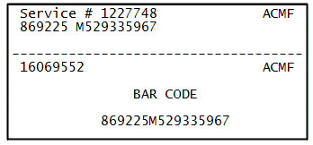

Go Home
Site Map
Go Home
Site Map
Read PROM I.D. without the ECM scanner tool
Most people know to read Broadcast label is on the PROM/MEMCAL but many TSB from GM needs the "Internal ID" number. Why? GM wants dealers to get the PROM ID without taking apart anything. (Also GM doesn't trust ECM label... Label falls off or gets used/rebuild ECM, etc.)
If you have Original Factory ECM and PROM and ECM has its label then the PROM Internal ID# is on the ECM label.
OE ECM Label

Top Section has ECM and PROM ID. Bottom section maybe missing.
(Source: Label from my ECM.)
What the numbers mean.
Service # 1227748 <--ECM ID ACMF <--Prom External ID. (The "Broadcast" label.) Must match label on the PROM!
869225 M529335967 <--Ignore, not needed.
||\||/
|| \ /
|| PROM Internal ID. Scanner should read this number.
\/
Year Built. Not always same as model year.